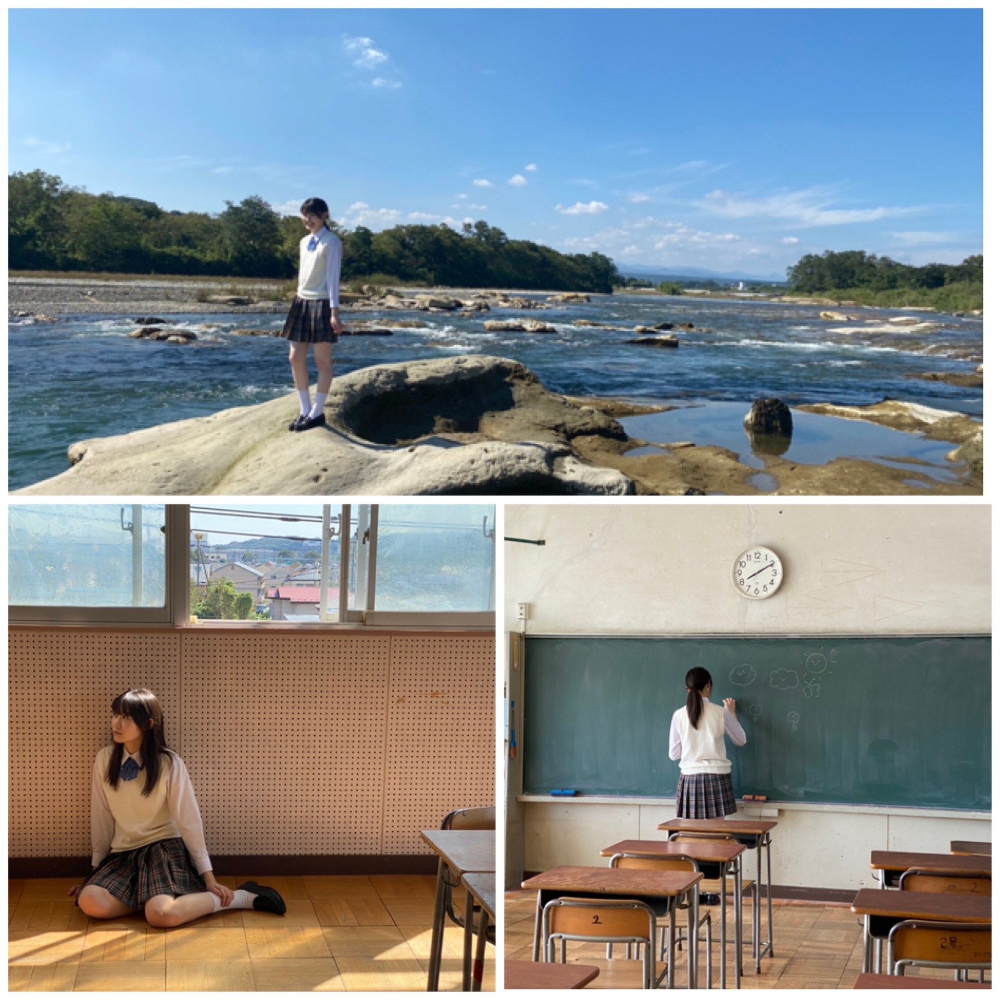
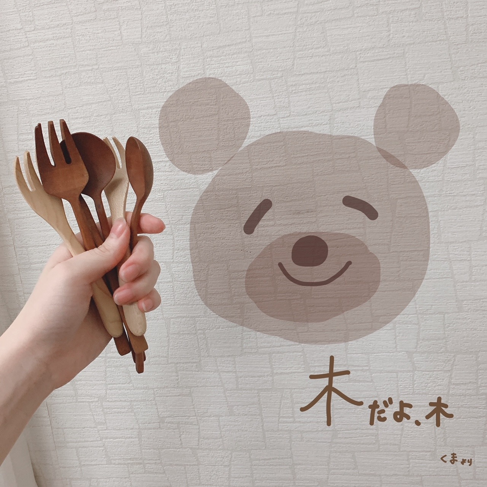
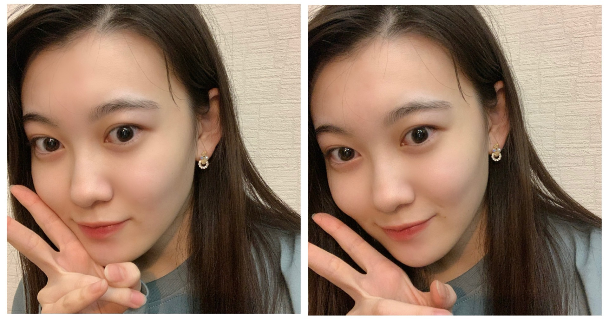
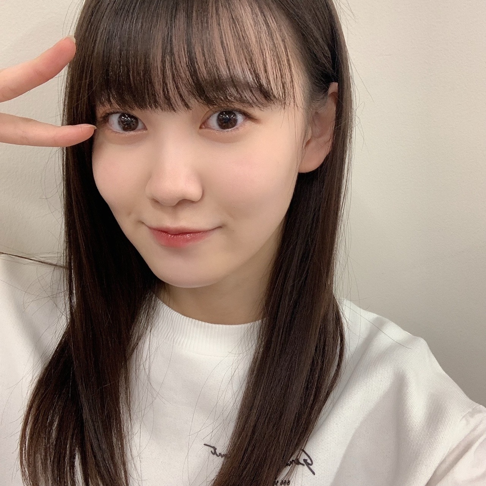

2020/1027Tue明るくね 松尾美佑
今、甘栗を食べています。
今日も良い日です。
最近気づいた事は、早起きは幸せを増やしてくれることです。
そして2度寝は幸せそのものです。
どっちを選びましょうかね
(๑ت๑)
松尾美佑です¨̮
16歳、高校2年生です。
一昨日前髪切りました
♪♪
明るい気持ちᐠ( ᐛ )ᐟ
お話を始めますね
24日に発売されました！
B.L.T.さん！

オフショットですっ
制服を着させて頂きました！
学校の中で追いかけっこをして下さったり、私の緊張を笑顔で解いてくださって、
本当に有難く楽しかったです！
そして綺麗な川にも行きました！
凄く遠い山も見えて、緑と青が沢山で
本当に綺麗でしたˊᵕˋ
インタビューでは今までとは少し違う、難しいようで凄く大切なお話もさせて頂きました
色々と深く考えがちな自分の事も少しだけ好きになれるような気がしました。
見て頂けたら嬉しいです( Ꙭ)
10月25日
中田花奈さん、ご卒業おめでとうございます
研修生の頃から中田さんは私の憧れで、
繰り返し繰り返し画面の中にいる中田さんを必死で追いかけていました。
『生のアイドルが好き』で初めてご一緒させて頂けると分かったとき本当に嬉しくて、
伝えたい事が沢山あって、
でも緊張で言葉が気持ちと反比例して下手っぴになってしまいましたが
本当に優しく楽しくお話して下さって、宝物のような時間でした。
中田さんの言葉は、私を私のままでいさせてくれるような、そんな力があります。
自分の "好き" を分かっているのに無視しようとしてしまったり、諦めようとしてしまったり、
本来の自分から悲しいのに離れそうになった時に引き止めてくれるような力です。
沢山ありがとうございます。
ずっとこれからも憧れです。

念願だった木のフォークを手に入れました。
(スプーンもいます)
お返事〜
✽ 子供の頃好きだったアニメは何ですか？
テレタビーズは、アニメに入りますか？
✽ 栗拾い、したことありますか？
あるらしいんですけど記憶に無いです(´◔_◔)
✽ オススメのドラマあったら教えて欲しいなぁ☺️
それなぁ☺️
教えて欲しい。
✽ どうしたら綺麗に前髪が流せますかね...？本当に疑問でなりません৲( °৺° )৴??
なんだその顔文字さんは！可愛い！
私は流したい方向で小さい手がいっぱいあるクリップ(バンスクリップって言うらしい)で前髪を止めちゃって、しばらくしてからとるとちょっと髪の毛が集合してくれてるので、コテでもうちょっとしっかり集合してもらいます！
クリップで癖をつけちゃうと簡単です！
✽ 海外に行ったことありますか？
1回だけ！
今凄く飛行機乗りたい気分です。
✽ 至福のひとときはどんな時？
夜お布団に入って何も考えないで天井とにらめっこする時間
✽ コメントって全部見てますか？？こんなに遅いコメントも見れてるのかな？？
見てますよ！
( ఠఠ̲ఠ )( ఠఠ̲ఠ )目が3つ！
↑↑もうちょっと笑って欲しいですね
( ఠ͜ఠ )あなたいい笑顔よ
✽ 冬になったら何鍋を食べたい？？
キムチ！
✽ ミュウちゃんは流星に何を願いましたか？
流れ星見れますように

まだ前髪切る前です

切った後(今)
明日は〜
なお〜〜〜〜〜
かぼちゃ貰ったの
大きくして馬車にしたから乗ってってね
そして、
明日は白石麻衣さんの卒業コンサートです
私達新4期生にとっては初めて先輩方とご一緒させて頂くライブです。
緊張が止まりませんが、白石さんと同じステージに立てる最初で最後の有難い時間を精一杯噛み締めながら挑みます。
最後までありがとうございました¨̮
ミュウでした¨̮
ばいっっっっっっっ( Ꙭ )/''

PROFILE
新4期生リレー
202104
| SUN | MON | TUE | WED | THU | FRI | SAT |
|---|---|---|---|---|---|---|
| 1 | 2 | 3 | ||||
| 4 | 5 | 6 | 7 | 8 | 9 | 10 |
| 11 | 12 | 13 | 14 | 15 | 16 | 17 |
| 18 | 19 | 20 | 21 | 22 | 23 | 24 |
| 25 | 26 | 27 | 28 | 29 | 30 | |

コメント(199)
美佑ちゃんに影響を受けて、自分もほぼ毎日甘栗を食べてるよ笑
2度寝は寝過ごしたときのやらかした感が半端ないから、プラスとマイナスが表裏一体な気がする〜笑
BLTまだ見れてないや(^^;)
はやく買わねば！！
花奈さん卒業おめでとうだね。
寂しいけれど、これからも思い出は一緒だよ！！
前髪とても可愛い(*´-`)
よく似合ってる！！
5日後のブログ更新も楽しみに待ってる(^^)
体調に気をつけてお仕事頑張ってね！！
ぼんやりと思い出した。
木の食器、どこに売ってたっけ。。
おすすめのドラマ、、、僕が視てるのは相棒ですね。
ミュウちゃん、誰かに見られたら、この子眼開けたまんま寝る子！？って思われちゃうよ。。
(^-^;
流れ星に何を願ったら良いか？
ランニングマンしながら、横浜に行けますように。
乃木坂の三代目に成れますように。←せめて四代目や！４期生。
僕は、早起きは苦手ですが二度寝は誰よりも得意です。
BLTのオフショットうれしいありがとう！
制服姿はやはり似合ってていいすね！
質問です！ファンタはグレープ派ですか？オレンジ派ですか？
次の更新楽しみにしてます！
らすかる
前髪似合ってますねぇ
明日ライブだね！観るよ〜
初めての全員でのライブだし、卒コンだし、緊張すると思うけど頑張ってね！！応援してるよ︎ ︎☺︎
ブログのお話好きなので、嬉しいです。
これからも頑張ってください。
みゆちゃんの笑顔に癒されてます。
あとクマの絵がとてもかわいいです！
質問なんですが絵はよく書かれますか？
『B.L.T.』拝見しました。念願の制服に笑顔も眩しく爽やかなグラビア。校舎内に始まり山紫水明な野外を望む楽しい撮影になって喜ばしい限り♪
憧れのかなりんの卒業は寂しいですが成長した姿を届けて応えられます様に。
木製食器とは自然な温かみが感じられて良いですね。
カットした前髪も実にお似合い。
いよいよまいやんを送り出す明日。ミュウちゃんにとって忘れ得ぬステージになる事を応援しています♪
タンブリング披露もあんかなーなんてワクワク
ミュウちゃんは身体能力高いし、パフォーマンスも楽しみなんだにゃあ
そして、ノギスキアクト2ではどんなキャラでキャラデミー上位入賞を狙ってるのかも氣になるぅ〜
甘栗は幸せですよね～
早起きは幸せ増しますね！
2度寝も捨てがたいですよ♪
B.L.T.さんとても爽やかです！
オフショットも清々しいです✨
木のフォーク達ナチュラルですし、
中田さんとっても自然体でしたね☆
前髪流すと視界が明るそうですが、
切った後は見た目か明るく見えます✌
白石さん卒コンは、
かぼちゃの馬車で駆け抜けて下さい～☺
いつも楽しみで、
甘栗食べようと思いました。
涙で画面がよく見えるか分からないけど、ミュウちゃん探します！(*´∀｀*)
(*´∀｀*) ←こういう顔文字の* って良いですよね、頬がポッとしてる感じで
バイトだったから見るの今になっちゃった(>_<)
BLT買いに行ったんだけど売ってなかった…
また明日見に行ってみます！！
前髪ほんとにいつも綺麗すぎて憧れです…！
前髪はぱっつん以外(斜めに流したり)する予定はあるんですか？？
ブログ更新ありがとう
また5日後読めるのを楽しみにしてます！
デコ出し美佑ちゃん好きー！
明日は１番の思い出を作って下さいね！
オフショットありがたく頂戴します。
やっぱり制服似合うなぁ。
さすが現役です笑
明日がついに来てしまう、、
やっぱり近づくにつれて寂しい気持ちの方が強くなってきてる。
もちろん笑顔で送り出せるようにしたいけど、今までの思い出とか振り返るとね。
ミュウちゃんたちにとっては先輩とのライブは初やね！
配信とはいえ緊張するとは思うけど、かけがえのない時間になると思うから楽しんでね！！
画面の前で応援してます。
明日まいやんに沢山の感謝を伝えられるように頑張ろ！
ミュウちゃんのパフォーマンスも楽しみにしてます。
ではではまた明日。
次のブログも待ってます。
いつもありがとう。
あたらめて素敵な写真たちですね(^^)
フォークとスプーンで若様軍団に入りたいのかと思った笑
明日はまいやんの卒コン、そしてミュウちゃんのライブパフォーマンス初拝見です。
心して応援させていただきます！
みんなで素晴らしいライブにしましょう！
早起き。昔からことわざもあるし。って
２度寝するための早起き？
かなちゃんとは、短い間だったけど、一
緒に居られてよかったね。かなちゃんか
ら色々感じとったようで、これからの力
になるかな。
さぁ、まいやんの卒コン。
一番新しいメンバーの新４期生。ここで
力を発揮しないでどこでするんだって事
だよね。頑張ろう。
ばいいいいっ。
今日も抜群に可愛かったよ〜
どっちを選びましょうかね～
俺は甘栗を食べながら8度寝っ♪
ﾐｭ-ﾄ!!(oﾟ∀ﾟ)=○
B.L.Tのオフショット素晴らしいね 制服ミュウちゃんは可愛さが爆発してるし、めちゃくちゃ似合ってる こんな子が学校にいたらなー
前髪切ったんだね 切った写真可愛いよ やっぱり僕は前髪ぱっつんの方が好きかな～
三つ目絵文字からの笑顔になる これ笑っちゃったよ 可愛いねぇ～
さっきまでアベマでまいやんの卒業特集見てたんだけど、クイズコーナー面白かったよ～ ミュウちゃんのまいやん愛が伝わったし最高のひとときでした
ノギスキACT2始まるね！今度は三期生も出るらしいからめっちゃ楽しみだよ！ミュウちゃんと三期生の絡み早くみたいな～
明日のライブ頑張ってね！！！！
前髪切った姿かわいいです！
前髪を上げていると凄い"大人！"って感じで、前髪を使っているとザ・高校生って感じがします。
うーん
どっちも好きだし決められないです…w
明日は白石さんの卒業ライブですね。
みんな号泣すると思います。僕も泣きます。
でも、楽しんで行きましょう！
ミスを恐れず、頑張ってください！
ファイティン
甘栗おいしいよね
甘くて栗っとした感じ〜
分からな〜い
みゆ！
やっほー！
ひろき(Yandji)です☺️
ブログ更新ありがとー！！！
質問タイムー！！！
自分を動物に例えると何だと思う？
また、コメントするね！
では、またねー！
ひろき(Yandji)より
甘栗おいしいよね
甘くて栗っとした感じ〜
分からな〜い
前髪切る前の姿めっちゃキレイ
でも、前髪切ったあともめっちゃキレイ！そして、可愛い
天使です
(ΦωΦ)ﾌﾌﾌ･･
質問です
嫌いな教科は、なんですか？
ちなみに私は、体育がめっちゃ嫌いです。
運動するのが苦手なんです。でも、乃木坂さんの曲を真似して踊ることはめっちゃ好きです
次回のブログも楽しみにしています！
おやすみなさい
前髪は何センチに切ったんですか？
BLTは買ったよ、けどまだ配達中です。
ミュウちゃんは外来語の勉強興味ある？
今日は早コメです。
B.L.Tの新シリーズ「4期生グラビア向上委員会」見たよ！
新4期生のトップバッターとしての登場、嬉しい限りです！
やっぱりミュウちゃんは制服が似合いますね！めっちゃ可愛いです！
制服はいつものと違うかもだけど、普段の学校生活でのミュウちゃんを見てるように自然な笑顔がいっぱいで、この半年、見てきたミュウちゃんとも少し違う新しいミュウちゃんに出会えたような気持ちです。
インタビューで話してくれた、毎日の当たり前のことが当たり前ではないことを意識して、日々を大切に噛み締めながら生活しているミュウちゃん、素敵です！
２年前の坂道合同オーディションから、研修生期間を経て、乃木坂46に加入するまで、いろんなことを考え、経験してきたミュウちゃんだからこそ持ち得た感情なのかなって思いました。
B.L.Tの感想はまだまだいっぱいあるので、またコメントするね！
明日はいよいよ白石先輩の卒コンライブですね！
新4期生にとって乃木坂46全体での初ライブ、どんな活躍をしてくれるか楽しみです！
自分も遅ればせながら今日、チケットを購入したので、明日は全力でミュウちゃんを、そして乃木坂46のみんなを応援しますよ！
大成功するよう、山口から念を送り続けるので、安心して？頑張ってくださいね！
最後に、栗拾いの質問と、かぼちゃの馬車、ありがとうです！
それではまたコメントするね。
ミュウちゃんにとって明日がいい日になりますように！(^.^)/~~~
早起きと2度寝
2度寝を選びたい
でも2度寝しても起きるのが5時半だったら早起きだからどちらもってことで幸せいっぱい
オフショットありがとう
B.L.T.まだ届かないから見れてない
早く届いてほしいな
すごく楽しみです。
花奈さん卒業されたね
長い時間ではないけど一緒に過ごせた時間は素敵な思い出だね
明日はまいやんの卒業コンサート
頑張ってね遠くから応援してます
最後の1日素敵な時間を過ごせますように
木のフォーク(スプーンも)いいね
もう使った？
くまさん君なら何食べる？
前髪いい感じだね
かわいい
更新ありがとう
ではまたね
ばいばい
ブログ更新ありがとう。
今日、B.L.T.ゲットしましたー！
その前にブログでオフショット見ましたー！笑
おかげで期待がさらに膨らみました！
いざミュウちゃんのグラビアを見たら笑顔が眩し過ぎて言葉を失いました。笑
釣られて僕も笑顔になりました！
決してにやけてはいません！決して！笑
ちなみに僕が1番好きなカットは黒板消しを持っているポニーテール姿のミュウちゃんです。
黒板に描かれているうさこあらさんも可愛いですね。
インタビューも読みました。
ミュウちゃんの素の姿が見られたし、何より本当に楽しそうに撮影してたんだなってことが伝わってきてすごく嬉しかったよ！
ご家族、乃木坂に入る前からのお友達、そして新たに乃木坂46がかけがえのない存在、かけがえのない場所になっていると言ってくれてありがとう！
その言葉は応援する僕の立場からみても本当に嬉しいことだよ！
きっとこれからミュウちゃんにとってかけがえのない存在や場所は増えていくと思う！
これからどんな自分に出会えるんだろうね！
僕も楽しみで仕方ないよ！
ミュウちゃん、これからも1日1日たくさんの思い出を作って下さいね。
明日はいよいよまいやんの卒コンですね。
緊張してるみたいだけど、きっとこの日のためにたくさんレッスンしたんだと思うので、あとは本番で楽しむだけだよ～！
ミュウちゃんなら大丈夫！
最高に楽しい卒コンにして、まいやんの卒業に花を添えようね！
僕も画面の向こうからたくさんのエールをおくるよー！
まいやんの卒コンが無事に成功することを祈っています。
いよいよ明日は白石さんの卒コンだね！僕は、ごめんなさい、配信見れないのですが、素晴らしい感動的なコンサートになること間違いないですね(^^) ミュウちゃんのステージ見たかったな。。明日は群馬県民の日でもあるので、勉強しつつ乃木坂見つつゆっくりしたいと思います(´∀｀)
勉強の合間に読んでたから今日は短くてごめんなさい！
ブログ更新ありがとう！次回も楽しみにしてます！
では！バイジョーじ！
明日はコンサートやね！まいやん最後のステージ最高の思い出にしようね！
私結構電車の中でも寝れる人なのよ。すぐ寝れるけどすぐ起きる笑
目閉じて10秒後ぐらいに開けたら15分くらい経ってて、駅6つか7つ先にワープしてる笑笑
しっくりきて馴染む感じが好きです。
(^^)
二度寝を気持ち良くできるのも若いうちだけなので、できるうちしておくのも悪くないですよ。
だんだんと文章が柔らかくなって来た。
本当の君の姿が見えて来たような気がする！
TVや他のメディアで見る君の笑顔もとても柔らかくて、美しくなった。
これからもどんどん素敵な女性になっていく予感しかない。
ありがとうね。
早起きは最近できていないです…
二度寝はよくするんですけどね笑
オフショットありがとうございます
どれも爽やかで素敵ですね
かなりんの卒業寂しいですね…
頂いた物が多かったと思いますが、これからのミュウちゃんの糧に絶対なると思います
前髪を切る前もよかったですが、切ってからもお似合いで素敵です
明日のまいやんの卒コンも見ますね
またの更新楽しみにしています
私は遅寝遅起き2度寝大好きな引きこもりです。中学生くらいまでは早起きでしたが、高校大学で遅寝になって、就職してからしばらくはまた早起きでしたが、また遅寝遅起きになってしまいました。
あしたはまいやんの卒コンですね。卒業していくまいやんと、初めて全体ライブに参加する新4期生って、なんか対象的ですね。ライブは全て特別な時間ですから、思いっきり楽しんでください。
ではまた。
みゆ！
ひろき(Yandji)です☺️
今回の質問返しで、前回質問したやつ答えてくれてた！！！
答えてくれてありがと☺️
電車の中でブログ見て、嬉しくてテンション上がってた☺️
おれが、質問したやつは、
オススメのドラマあったら教えて欲しいなぁ☺️
だった。
おれが好きなのは、恋愛系、刑事ドラマ系とか、いろんなもの好きやわ！
個人的には、科捜研の女、警視庁捜査一課長、相葉とかが刑事ドラマでオススメやなぁ☺️
ふと気づいたのが、自分でも気づかない内に俳優さんでドラマ選んでるのかって、最近思い始めてきた、、、
田中圭さん、横浜流星さん出てるドラマ、基本見てる気がする☺️
最近一番好きやったのは、やっぱりみんなお気に入りの半沢直樹だよね！！！
ドラマについて書くと長くなりそうやから、ここまでにしよっと！
すごい、、、ね、、む、、、い
おやすみー！
また、コメントするね！
では、またねー
ひろき(Yandji)より
かぼちゃの馬車は考えましたね(^^)
ノギスキもお疲れさまでした&シーズン2も楽しみにしています！
今日は白石麻衣さんラストライブですが怪我など気をつけて笑顔で送りだしてくださいね(^ ^)
ずいぶん前の乃木坂工事中で美佑ちゃんって名前が平凡だと言ってたけど素晴らしく可愛い名前だと思うよ〜（＾ω＾）
髪を流しておでこ出してるの好きだったんですが、前髪切っちゃったって事はもう前髪を流しておでこ出してる髪型は見れないんですね(´・ω・`)
明日(今日)のまいやん卒業ライブ応援してるよ
『質問』
メンバーのお家(部屋)にお泊まりしに行った事はありますか？
おでんは鍋料理に入ると思いますか？
ショートケーキの苺はいつ食べますか？
美佑ちゃんと同じ高校2年生の愛知の覇王です！
さくらちゃんとあやめちゃんと楓さんと同じ愛知県出身だよ！
オフショットありがとう！
めっちゃ可愛いよ！
いよいよ今日、白石麻衣さんの卒業コンサートだね！
白石麻衣さんが卒業するのは悲しいし、寂しいと思うけど、素晴らしい思い出をたくさん作ってね！
これからもずっと応援するので、頑張ってください！
すごく早い時間に一回目覚めてから二度寝して早起きすれば幸せ2倍。。。になるかもしれない(ﾉ∀`)
BLTさんもちろん入手済み♪
制服ミュウちゃんかわいすぎ(n*´ω`*n)
同じ学校にいたら間違いなく惚れてるわ。。。いや今現在同じ学校じゃないのにすでに惚れてるけどね(^_^;)
どんなミュウちゃんもかわいいけどやっぱり前髪ある方が好みだわぁ（*´∀｀*）
材料が揃ったのでミュウちゃん応援グッズ作るね♪
完全自作のお手軽グッズなのであんまりたいしたものじゃないけど、いつかミュウちゃんに見せられたらいいな。。。o(^-^o)(o^-^)o
それじゃまたねー＼(*⌒0⌒)b
まいやんとの最後のライブ楽しんでね！画面越しで応援してます！
コメントする